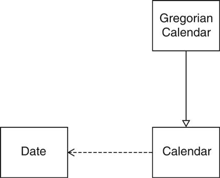
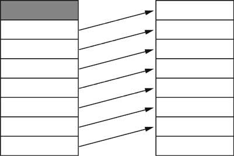

| Contents [0/57] |
| Object-Oriented Design & Patterns [1/57] |

| Chapter Topics [2/57] |
| Date Classes in Standard Library [3/57] |
Date now = new Date();
// constructs current date/time
System.out.println(now.toString());
// prints date such as
// Sat Feb 03 16:34:10 PST 2001
| Methods of the Date class [4/57] |
| boolean after(Date other) |
Tests if this date is after the specified date |
| boolean before(Date other) | Tests if this date is before the specified date |
| int compareTo(Date other) |
Tells which date came before the other |
| long getTime() |
Returns milliseconds since the epoch (1970-01-01 00:00:00 GMT) |
| void setTime(long n) |
Sets the date to the given number of
milliseconds since the epoch |
| Methods of the Date class [5/57] |
| Points in Time [6/57] |

| The GregorianCalendar Class [7/57] |
| Date Handling in the Java Library [8/57] |

| Designing a Day Class [9/57] |
| Designing a Day Class [10/57] |
| Designing a Day Class [11/57] |

| Designing a Day Class [12/57] |
int n = today.daysFrom(birthday);
Day later = today.addDays(999);
d.addDays(n).daysFrom(d) == n
d1.addDays(d2.daysFrom(d1)) == d2
(d + n) - d == n
d1 + (d2 - d1) == d2
| Implementing a Day Class [13/57] |
private int year
private int month
private int date
| Implementing a Day Class [14/57] |
file:horstmann/ch03_day1/Day.java [source] [doc-public] [doc-private]
file:horstmann/ch03_day1/DayTester.java [source] [doc-public] [doc-private]
| Second Implementation [15/57] |
file:horstmann/ch03_day2/Day.java [source] [doc-public] [doc-private]
| Third Implementation [16/57] |
file:horstmann/ch03_day3/Day.java [source] [doc-public] [doc-private]
| The Importance of Encapsulation [17/57] |
d.yearwith
d.getYear()
d.year++?
d = new Day(d.getDay(), d.getMonth(), d.getYear() + 1)
| Accessors and Mutators [18/57] |
| Don't Supply a Mutator for every Accessor [19/57] |
Day deadline = new Day(2001, 1, 31);
deadline.setMonth(2); // ERROR
deadline.setDate(28);
Day deadline = new Day(2001, 2, 28);
deadline.setDate(31); // ERROR
deadline.setMonth(3);
| Sharing Mutable References [20/57] |
class Employee
{
. . .
public String getName() { return name; }
public double getSalary() { return salary; }
public Date getHireDate() { return hireDate; }
private String name;
private double salary;
private Date hireDate;
}
| Sharing Mutable References [21/57] |
Employee harry = . . .;
Date d = harry.getHireDate();
d.setTime(t); // changes Harry's state!!!
public Date getHireDate()
{
return (Date)hireDate.clone();
}
| Sharing Mutable References [22/57] |

| Final Instance Fields [23/57] |
| Separating Accessors and Mutators [24/57] |
Scanner in = . . .;
String s = in.next();
| Separating Accessors and Mutators [25/57] |
String getCurrent();
void next();
String getCurrent();
String next(); // returns current
| Side Effects [26/57] |
a.addAll(b)mutates a but not b
| Side Effects [27/57] |
SimpleDateFormat formatter = . . .;
String dateString = "January 11, 2012";
Date d = formatter.parse(dateString);
FieldPosition position = . . .;
Date d = formatter.parse(dateString, position);
| Side Effects [28/57] |
if (newMessages.isFull())
System.out.println("Sorry--no space");
| Law of Demeter [29/57] |
| Law of Demeter [30/57] |
| Quality of Class Interface [31/57] |
| Cohesion [32/57] |
public class Mailbox
{
public addMessage(Message aMessage) { ... }
public Message getCurrentMessage() { ... }
public Message removeCurrentMessage() { ... }
public void processCommand(String command) { ... }
...
}
| Completeness [33/57] |
Date start = new Date();
// do some work
Date end = new Date();
| Convenience [34/57] |
BufferedReader in = new BufferedReader(new
InputStreamReader(System.in));
| Clarity [35/57] |
LinkedList<String> countries = new LinkedList<String>();
countries.add("A");
countries.add("B");
countries.add("C");
ListIterator<String> iterator = countries.listIterator();
while (iterator.hasNext())
System.out.println(iterator.next());
| Clarity [36/57] |
ListIterator<String> iterator = countries.listIterator(); // |ABC
iterator.next(); // A|BC
iterator.add("France"); // AX|BC
| Consistency [37/57] |
new GregorianCalendar(year, month - 1, day)
| Consistency [38/57] |
s.equals(t) / s.equalsIgnoreCase(t)
boolean regionMatches(int toffset,
String other, int ooffset, int len)
boolean regionMatches(boolean ignoreCase, int toffset,
String other, int ooffset, int len)
| Programming by Contract [39/57] |
| Preconditions [40/57] |
| Preconditions [41/57] |
| Preconditions [42/57] |
/**
Remove message at head
@return the message at the head
@precondition size() > 0
*/
Message remove()
{
return elements.remove(0);
}
| Circular Array Implementation [43/57] |
file:horstmann/ch03_queue/MessageQueue.java [source] [doc-public] [doc-private]
| Inefficient Shifting of Elements [44/57] |

| A Circular Array [45/57] |

| Wrapping around the End [46/57] |

| Preconditions [47/57] |
| Assertions [48/57] |
assert condition;
assert condition : explanation;
| Assertions [49/57] |
public Message remove()
{
assert count > 0 : "violated precondition size() > 0";
Message r = elements[head];
. . .
}
java -enableassertions MyProg
| Exceptions in the Contract [50/57] |
/**
. . .
@throws NoSuchElementException if queue is empty
*/
public Message remove()
{
if (count == 0)
throw new NoSuchElementException();
Message r = elements[head];
. . .
}
| Postconditions [51/57] |
@postcondition size() > 0
q.add(m1);
m2 = q.remove();
| Class Invariants [52/57] |
| Class Invariants [53/57] |
0 <= head && head < elements.length
0 <= headnew && headnew < elements.length
return elements[head];
| Unit Testing [54/57] |
| JUnit [55/57] |
| JUnit [56/57] |
import junit.framework.*;
public class DayTest extends TestCase
{
public void testAdd() { ... }
public void testDaysBetween() { ... }
. . .
}
| JUnit [57/57] |
public void testAdd()
{
Day d1 = new Day(1970, 1, 1);
int n = 1000;
Day d2 = d1.addDays(n);
assertTrue(d2.daysFrom(d1) == n);
}
Revised: 2007/09/11 16:24